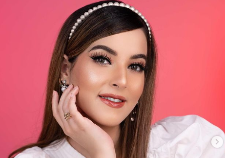

Nama asli Tasya Fasya adalah Lulu Farasya. Lahir pada 25 Mei 1992, dia merupakan anak dari pengusaha tajir Alawiyah Alatas, pemilik PT. Tifar Admanco, sebuah perusahaan pelatihan dan penyalur tenaga kerja ke Timur Tengah. Nama Tasya Farasya semakin dikenal luas ketika meriview sejumlah produk kecantikan dari brand lokal sampai Internasional. Semenjak itu, dia meraup banyak uang dari statusnya sebagai selebgram sekaligus beauty vlogger.
Tasya Farasyamemiliki nama lengkap Lulu Farassiya. Dia lahir di Jakarta pada 25 Mei 1992. Ibunya bernama Wiwi Alawiyah Alatas, ayah Tasya Farasya adalah seorang dokter dan telah meninggal sejak Tasya masih berusia 3 tahun. Ibu Tasya, Alawiyah Alatas atau akrab disapa Ala Alatas merupakan pengusaha sukses. Tasya Farasya merupakan anak bungsu dari tiga bersaudara, kakaknya yakni Selvi Alavia sementara Tasyi Athasyia merupakan saudara kembarnya. Tasya Farasya menikah dengan seorang pengusaha bernama Ahmad Assegaf pada 2018 lalu. Dari pernikahan ini, Tasya dan suami dikaruniai sepasang putri dan putra bernama Maryam Eliza Khair dan Hasan Isa Assegaf.
Tasya Farasya sekolah di SMA 8 Bukit Duri, Jakarta Selatan. Setelah menamatkan SMA, Tasya melanjutkan kuliah di jurusan kedokteran gigi Universitas Trisakti. Meskipun sudah lulus dan sudah resmi menjadi seorang dokter gigi, Tasya lebih memilih jalan karier di bidang kecantikan yang sesuai dengan passionnya.
Tasya Farasya sejak kecil sudah tertarik dengan hal yang berbau kecantikan, bahkan dia sudah sering bereksperimen dengan make up. Bahkan sejak SMA Tasya sudah bisa mengaplikasikan dandanannya sendiri dengan mengikuti riasan tokoh idolanya, Nicole Scherzinger. Tasya Farasya juga sudah menjadi model freelancer untuk beberapa brand lokal.
Tasya Farasya juga memutuskan untuk menjual jasa MUA dengan teman kuliahnya yang bernama Rebecca atau biasa dipanggil Becky. Awalnya, Tasya mengunggah hasil riasan kliennya maupun riasan pada wajahnya sendiri ke Instagram, unggahan itulah yang membuat Tasya memiliki banyak follower yang kini jumlahnya mencapai 6 juta. Follower Tasya pada saat itu banyak yang memintanya untuk membuat channel Youtube. Awalnya Tasya tidak berniat membuat channel Youtube, karena tidak bisa mengoperasikan dan mengedit video. Namun akhirnya Tasya Farasya membuat channel Youtube pada 2016 dan kini juga memiliki 4,22 juta subscriber.
Tasya Farasya juga menjadi brand ambassador di sejumlah produk make up dan produk kecantikan ternama. Bahkan, menjadi bintang iklan sejumlah produk kecantikan.
Tingginya antusiasme dari para beauty enthusiast, membuat Tasya Farasya resmi meluncurkan brand kecantikan sendiri bernama Mother of Pearl secara eksklusif di Sociolla pada Selasa (21/9/2021). Nama Mother of Pearl yang dipakai sebagai brand kecantikan Tasya Farasya ini, ternyata mengandung makna yang mendalam. Selain itu, Tasya mengaku bila nama tersebut tercipta dari nama aslinya sendiri. Tasya juga menjelaskan bila dalam proses terciptanya brand kecantikan tersebut, ada banyak campur tangan dari para penggemarnya. Hal ini menegaskan bila dirinya ingin menciptakan produk yang benar-benar sesuai dengan harapan para beauty enthusiast.
Untuk mencapai flawless complexion yang selama ini diinginkan para beauty enthusiasts, Mother of Pearl meluncurkan tiga produk pertama yang nyaman di kulit wajah serta menjaga ketahanan makeup dengan lebih lama.
| PRODUK MOP |
|---|
| Anti Cakey Lock and Smooth Gripping Primer |
| Microblur Translucent Loose Powder |
| Cover Age High Coverage Creamy Concealer |
| AM to PM Colorfast Hypertint |
| My Lips But Prettier Silk Tint |
| GWS for Your Lips |
Dari produk yang udah dilaunching MOP, produk mana nih yang jadi favorite kamu???